架构
扩展 AIB 时先判断变更涉及文件格式、工作簿运算、持久化还是展示。公开格式属于 schema，CLI 和浏览器共用同一服务命令。
工作簿命令如何执行


手动保存或自动保存时，工作台将内存中的改动和读取版本的哈希提交给服务端。存储模块在锁内应用操作、写恢复记录，并在替换工作簿前核对磁盘版本。格式转换模块读写 XLSX、XLS 和 CSV，也能从内存工作簿生成只读 HTML。
模块依赖关系
箭头由使用方指向依赖方。实线表示直接导入，虚线表示跨进程调用。图中展示主要连接，下表列出各运行时模块的项目内直接依赖。


模块职责和边界
| 模块 | 职责和约束 | 项目内直接依赖 |
|---|---|---|
| packages/schema | 工作簿 JSON、字段、地址、容量与校验。纯数据规则可在浏览器运行。 | — |
| packages/univer-adapter | AIB 与 Univer 快照、日期、样式、共享公式相互映射。输入输出均为内存对象。 | schema |
| packages/core | operations.ts 定义操作结构。引擎执行、填充、公式求值、范围读取和差异比较处理内存工作簿。 | schema、univer-adapter |
| packages/storage | 唯一的原生工作簿事务写入边界。负责路径、原子替换、锁、哈希、草稿、撤销和恢复。 | schema、core |
| packages/conversion | 解析 XLSX、XLS、CSV，生成导出字节和损失报告。HTML 只读渲染处理可见性。 | schema、univer-adapter、core |
| packages/service | index.ts 分派命令。context.ts 发布 AI 契约，formats.ts 编排格式策略，request.ts 定义请求和错误返回。 | schema、univer-adapter、core、storage、conversion |
| apps/cli | 解析参数、stdin 和 JSON 输出。离线执行或通过本地 RPC 调用 service。 | server、resources.ts、service、schema |
| apps/server | 负责本机会话、文件选择器、打开工作簿、HTTP 和静态资源。listen.ts 选择浏览器可访问的端口。 | resources.ts、language.ts、service、storage、schema |
| apps/web | 主编辑器协调选择、输入、撤销和同步。api.ts 处理会话与请求，autosave.ts 合并写盘，local-edits.ts 操作编辑器模型。 | language.ts、core（统计）、schema、univer-adapter。另引用 server/file-dialog 的类型。 |
| apps/launcher | 由系统文件关联启动工作台。 | cli（子进程） |
| apps/resources.ts | 按语言导出项目随附的离线指南。 | language.ts, schema |
| apps/language.ts | 定义支持的语言并解析语言偏好。 | — |
| scripts · tests · skills | 工具链构建和封装同一套资源。单元、浏览器和发行包测试走真实入口。skills 包含给模型的离线说明。 | 开发与分发工具 |
数据契约与失败处理
磁盘上的 revision 是文件字节的 SHA-256。CLI 写入和工作台保存使用同一路径锁与 expectedHash。非协作的外部写入者可以绕过锁，同时编辑同一文件时应使用 CLI 或草稿。恢复文件位于 AIB_HOME，而 .aib 只含工作簿。
模型使用 context 获取格式版本、操作 schema 和可选元数据。服务请求决定何时允许格式损失，转换器只报告实际问题。编辑字段、类型或容量时同步更新校验器、中、英文离线指南和对应回归测试。
扩展入口
新增操作时先更新 core/operations，再实现 core 行为，补充回归测试和 CLI/工作台入口。新增格式时添加 conversion 适配、service/formats 策略、capabilities 声明及往返测试。用 npm run check 验证依赖方向及文档命令。